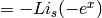
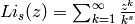

The smaller modules that are part of Odysseus and do not warrant a more extensive description (yet) are documented in this section.
This module contains a few convenience functions to work with the file system. String handling and interaction with the operating system is easy to do in Python, and processing directories of files (or selections out of them) can be done with the help of this module.
Functions to easily process file names.
Finds names from imglist between startstr and stopstr in time-ordered way
Inputs
imglist: list of str, containing paths of images on disc
- startstr: str, part of the name of the oldest image by date that is
wanted
- stopstr: str, part of the name of the newest image by date that is
wanted
Outputs
- imgs: list of str, containing the found paths to image files
Return a list of all files in a directory with extension ext
When globexpr is given, ext is ignored and the Python glob module is used to search for all files with the given pattern.
Inputs
- dirname: string, full path to the directory
- ext: string, extension of the files to process
- globexpr: string, glob search expression (can contain wildcards)
- sort: bool, if True the results are sorted by file date/time, newest first
Outputs
- imgs: list of strings, each string in the list is the complete path to a file
Polylog contains approximate algorithms for the polylog functions Li_2, Li_{5/2} and Li_3, as well as their bosonic equivalents. They were originally written by Martin Zwierlein for the Igor data analysis software.
Functions that approach several polylogarithms by polynomials.
Precision is on the order of 1e-7 or better. For working with fermions, the polylog functions Li(x) are usually used in the form -Li(-exp(x)). We therefore define functions fermi_poly as: fermi_poly_s(x) , with . This is useful if you are only dealing with Fermi statistics. For working with bose statistics we define g-functions in a similar way.
There is a more accurate and general algorithm in lerch.py for Li_s(x), that works for all s>0, the polynomial approximations in this file are much faster however.
Lerch contains a correct implementation of the polylog function Li(s,z) for arbitrary s and z. It is quite slow and therefore not used in Odysseus’ fitting routines, but nevertheless important to check the correctness of the approximate algorithm.